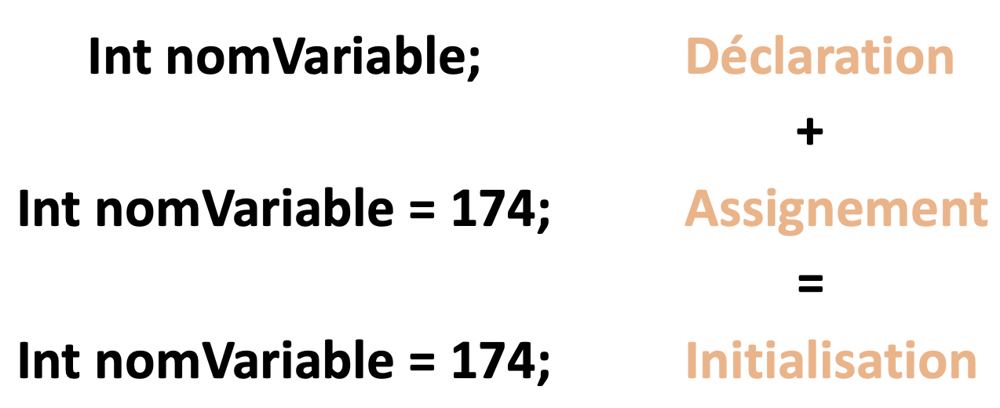

Java est ce qu’on appelle un langage fortement typé, c’est-à-dire qu’il faut impérativement notifier à la variable le type de données qu’elle va devoir stocker. Il n’est pas nécessaire en java de vider l’espace de stockage utilisé par des variables, le langage gérant déjà cette tâche automatiquement.
Pour nommer une variable, il y a quelques conditions à respecter :
maVariableJava = camel case
MaVariableJava = Pascal case
ma_variable_java = snake case
Une variable est accessible partout dans la méthode où elle a été créée. En dehors de cette méthode, la variable n’existera tout simplement pas.
Créer une constante en Java se fait de la même manière qu’une variable à deux différences près. En effet pour créer une constante il faut utiliser le mot clé « final » et par convention écrire son nom en majuscule.